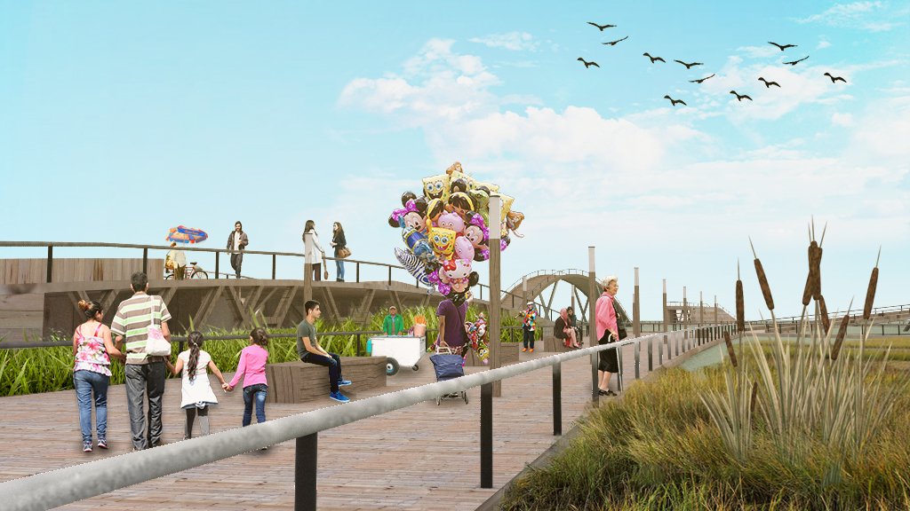
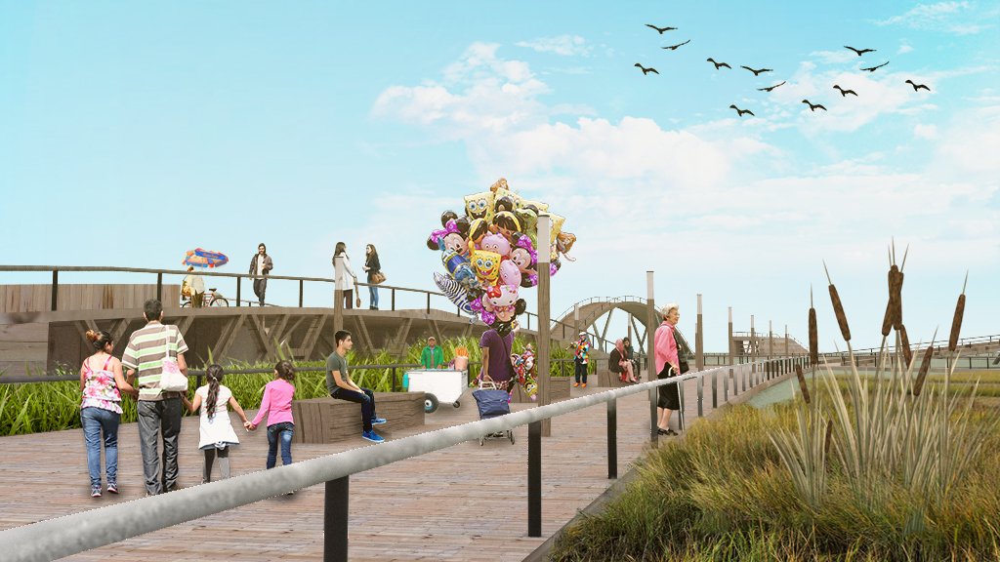
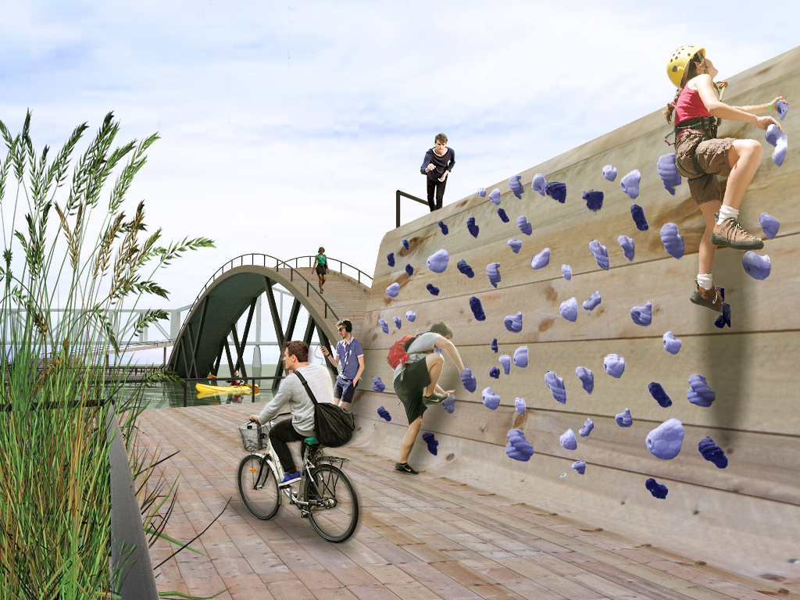
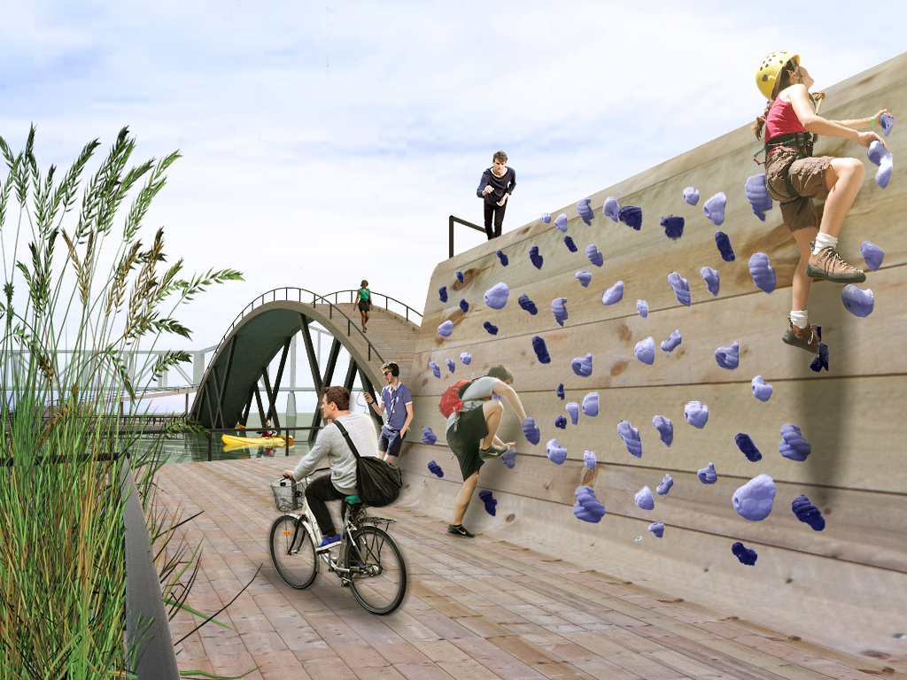

The Marsh floats above the Ohio River, adjoined to the Waterfront Park of Louisville. Beds of mussels are anchored beneath the boardwalks, and patches of flora create an artificial wetland to rehabilitate the polluted river.
 

As the Marsh filters the river, it serves to educate the public on the ecosystem it is restoring. The boardwalks create trails that explore each corner of the ecosystem, accompanied by information plaques.

The boardswalks transform to accommodate functions- rising to lookouts, opening for underwater observation, and bridging over the museum gallery and visitor center. The Marsh also hosts a kayaking program, a bait and tackle shop, riverside hammocks, and even rockclimbing.
 
